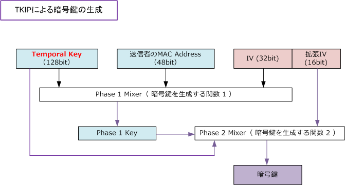
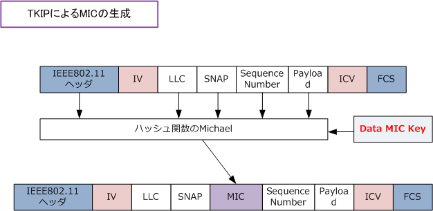
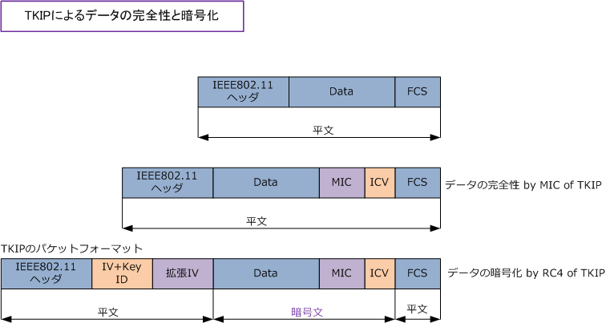
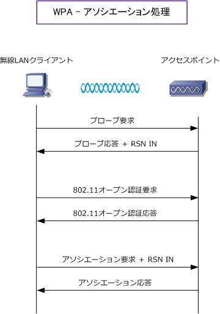
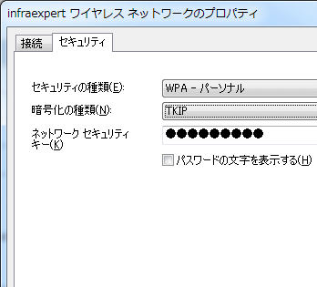
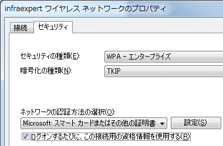
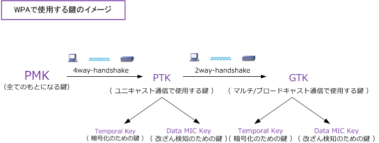

WPA ( Wi-Fi Protected Access )
WPAとは
WEPの脆弱性が発覚した時、この事態を深刻に受け止めたIEEE802.11では新たなセキュリティ規格として IEEE802.11i (WPA2) の策定化作業をはじめました。しかし標準化にはかなりの時間が必要であることが 分かり、この事態に危機感を募らせたWi-Fi アライアンスが IEEE802.11i の中の仕様で容易に実装できる セキュリティ技術を部分的に先取りした規格を策定しました。それがWPA (Wi-Fi Protected Access)です。 2002年10月に発表されたWPAでは、WEPの以下の問題を解決するための様々な技術が実装されています。
| 暗号化方式 | WEP （セキュリティ規格 ： WEP） | TKIP （セキュリティ規格 ： WPA） |
|---|---|---|
| 暗号化アルゴリズム | WEPによるRC4 (暗号の解読が容易） |
TKIPによるRC4 |
| 整合性の検証 | WEPによるCRC32 (実質的にデータの改ざんを検出できない） |
TKIPによるMIC |
| 認証方式 | WEPそのものにはないが IEEE802.1X認証を採用することができる |
PSK (Pre-Shared Key) 認証、または IEEE802.1X認証を採用することができる |
WPAの暗号化方式 - TKIPによるRC4（暗号化アルゴリズム）
TKIPが優れた暗号化方式であるとはいえ、暗号化アルゴリズム自体はWEPと同様にRC4を採用しています。 ただしTKIPではWEPよりも複雑な方法により暗号鍵を生成しています。暗号鍵のもとになるTemporal Key をダイナミックに生成して、この暗号鍵と送信者のMACアドレスと IV を組み合わせてハッシングを行います。

WPAの暗号化方式 - TKIPによるMIC (データの完全性の保証）
TKIPではデータの完全性の保証に「MIC」を使用します。このMICは下図のとおり、動的に生成される Data MIC Key、IEEE802.11ヘッダ、LLC、SNAP、Sequence番号、ペイロードの算出で求められます。 ハッシュ関数の部分に、より安全性の高い HMAC-MD5 を使用せずに Michael を採用している理由は、 TKIPがWEPを使用していたときの既存のハードウェアでも実装しやすくすることが一因となっています。

以上により、TKIPによる暗号化方法やデータの完全性の保証方法は分かりました。最後にパケットフォーマットを見てみましょう。
WPAの暗号化方式 - TKIPのパケットフォーマット
一番目のフレームは暗号化が行われていないパケットです。2番目のフレームはデータの完全性を保証 するために「MIC」を実装させた時のパケットです。3番目のフレームは、最終的にTKIPのRC4で暗号化 されたパケット、つまりTKIPのフレームフォーマットです。このパケットフォーマットは、よく見ると WEPで登場した「ICV」があります。つまり、TKIPでは従来のICVに加えてMICも実装させているのです。

WPAの接続シーケンス その1 （アソシエーション処理）
WPAでは、無線LANクライアント（ = Supplicant ) と、アクセスポイント ( = Authenticator ) との間で 以下の接続処理が行われます。アルゴリズムが複雑なので①と②に焦点をあて解説します。③～⑤における 接続処理は簡単にいえば、SupplicantとAuthenticatorとで使用される「鍵を生成」しているということです。
① アソシエーション処理 - WPAにおける各種情報の共有 ② PMK (Pairwise Master Key) の共有 - WPAで使用する様々な鍵のもとになるマスター鍵の生成 ③ PTK (Pairwise Transient Key) の生成 - ユニキャスト通信で使用される鍵情報の生成 ④ GTK (Group Transient Key) の生成 - マルチキャスト、ブロードキャスト通信で使用される鍵情報の生成 ⑤ Temporal KeyとData MIC Keyの生成 - 暗号化用のTemporal Key、改ざん検知用のData MIC Keyの生成
①のアソシエーション処理では、無線LAN端末とアクセスポイントとでWPAの情報共有と双方の認証をします。 最初にSupplicantからAuthenticatorにプローブ要求を送信します。プローブ要求を受信したAuthenticatorは プローブ応答を返します。その際にRSN IN (Robust Security Network Information Element) の情報を付加 します。このRSN INにAuthenticatorがどのような暗号化や改ざん検知をサポートしているかのセキュリティ 情報が入ります。この情報を受け取ることで Supplicant と Authenticator はWPAに関する情報を共有します。

続いて802.11認証を行います。ここではオープン認証を行います。最後にSupplicantがAuthenticatorに アソシエーション要求を行いその際にSupplicantもRSN INの情報を送信します。そして、これらの情報の 受信後、AuthenticatorはSupplicantにアソシエーション応答を返信して、アソシエーションは成功します。
WPAの接続シーケンス その2 （PMKの共有）
② のPMKの共有は、上記のアソシエーション処理の完了後に行われます。WPAでは、色々な鍵を使用して 通信するのですがPMK (Pairwise Master Key) はこれらのもとになるマスターキーです。WPAの認証方式 にPSK認証を使用する場合は、パスフレーズで設定したPSK (Pre-Shared Key) がPMKとして使用されます。 IEEE802.1X認証を使用する場合、802.1X認証成功後に配布されるセッション鍵がPMKとして使用されます。 ※ WPAでのPSK認証のことをWPAパーソナルモード、WPAでの802.1X認証のことをWPAエンタープライズモードといいます。
◇ WPA-PSK認証 PSK認証は、無線LANクライアントとアクセスポイントにあらかじめ手動でPSKを設定する必要があります。 ここで設定する「ネットワークキー/ネットワークセキュリティキー」は正確にはPSKではなくパスフレーズ なのですが、WPAではこのパスフレーズからPSKを自動生成します。パスフレーズは8文字以上63文字以内 で指定する必要があります。ちなみに総務省では、21文字以上のパスフレーズの設定を推奨としています。 ※ アクセスポイントがWPA-PSKの暗号化でAESも対応している場合、アクセスポイントも無線LAN端末もAESを選択した方が良い。
| Windows Vista / 7 の設定画面 |
|---|
 |
◇ WPA-IEEE802.1X認証 IEEE802.1X認証では無線LANクライアントやアクセスポイントに手動で認証鍵の情報を設定したりしません。 IEEE802.1X認証では認証成功後に認証サーバ（Radiusサーバ）が自動的に生成しクライアントに配布します。 IEEE802.1X認証方式に応じEAPの種類や「ネットワーク認証方法の選択」の設定を変更する必要があります。
| Windows Vista / 7 - 設定画面 |
|---|
 |
IEEE802.1X認証方式では、上の暗号化方式の設定以外に、以下の認証方式と認証情報の設定が必要です。 ここではWindows XPでの設定画面を紹介します。※ワイヤレスアダプタの種類により画面は異なります。
※ IEEE802.1X認証方式と認証情報の設定項目は、実装するIEEE802.1X認証の種類に応じて選択項目やチェック項目が異なります。 ※ EAPの種類で「スマートカードまたはその他の証明書」を選択した場合、認証方式にEAP-TLSの方式を選択したことになります。
WPAの接続シーケンス その3 （PTKの生成、GTKの生成、Temporal Key/Data MIC Keyの生成）
WPAのアソシエーションが完了しPMKを共有できたら、後はPMKの情報をもとにWPAで使用する鍵を自動的 に生成します。それぞれの鍵を生成するためのシーケンスの説明は省略しますが、以下のイメージでOKです。
